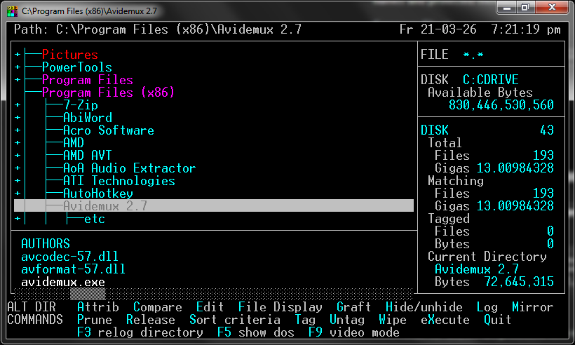

Description
The original XTREE GOLD for DOS was IMHO the best file manager ever written.
EXTREME is a native Windows file manager that attempts to emulate the speed and elegance of XTREE with new features
such as long file names and protected memory support.
Screen Shot

Features
- True 32-bit/64-bit protected text-mode Windows application.
- Windows long file name support (by design).
- Arbitrary screen mode support under Windows NT/2000/XP. Click here for a screen shot.
- Runs under Linux using WINE, and under ReactOS. Click here for a screen shot.
{kind=link}
{kind=link}
{kind=link}
Click here for setup guide for Windows 10 >>>
Downloads
Official Text Editor
The Thomson-Davis Editor (updated for 2022)
Default Compare Program
WinMerge (either WinMerge-X.XX-x64-Setup.exe or WinMerge-X.XX-Setup.exe)
Video Tutorials
Installing on Windows 10 and more.
Xtree Gold User Guides
The following are user guides for the original XTREE GOLD which inspired EXTREME.
Xtree Pro Gold Operations Manual
Click here for more links >>>